Week 1
Progress
In week 1, my group and I have decided on creating a wristband with GPS to tackle the challenge statement related to the security industry, so that the security guard's prowl path may be recorded. We did further research and listed down resources, hardware (GPS tracker), and software (MSSQL, MySQL, C#) that we intend to use for this project. We also discuss on how we each can contribute to this project with our strength.Contributions
I suggested some ideas, for example, by using a mobile app. Users can use the app's GPS map to track where the security guard's patrol path is. In any emergency, users can use the emergency function to ping to the security guard's wristband to alert that there is danger in the area and need the guard to be there to assist.Week 2
Progress
In week 2, my group and I plot out a map to sketch our idea which includes the different components, hardware such as using ESP32 and GPS Tracker, software (Python libraries(Matplotlib), AWS API Gateway, AWS DynamoDB). This sketch summarise all our ideas together on what we find feasible and finalise our project map. We also accumulated a list of items that we would like to request from our sponsors. With this, we are trying to split up the work according to our individual roles that we are incharge of different areas preferably to what we are comfortable and stronger in.Contributions
Our team has diligently prepared an Inception Deck to ensure our collective understanding and establish clear expectations for our project. To your right, you'll notice a poster showcasing our project logo, motto, and goals. These goals have been carefully crafted to define what we aim to accomplish in this project.Additionally, we have polished our elevator pitch, enabling us to effectively introduce our project to the audience. The consensus within our group has led us to the name "Seer," which we believe harmonizes with our motto and objectives.OAL Reflection
I've dedicated my weekends to the IBM Enterprise Design Thinking for Practitioner Courseware, a 14-lesson journey. It's transformed my understanding of design thinking from theory to practical skill, bridging the gap between concept and application. Approaching the conclusion of the course, I'm eagerly anticipating the acquisition of the IBM digital badge and certificate, both of which I intend to prominently feature on my LinkedIn profile. My drive extends beyond mere skill improvement; it's a steadfast commitment to enhancing my professional online presence.
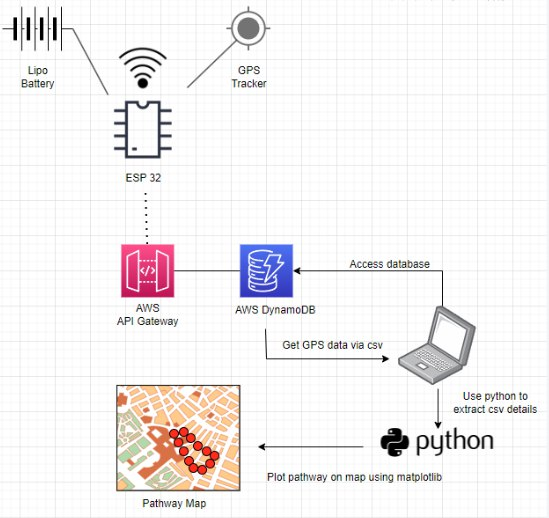
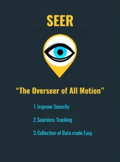
Week 3
Progress
In week 3, our group acquired the ESP32 NodeMCU, a breadboard, and jumper cables, marking the commencement of our SEER GPS Tracker project. Although we didn't have the GPS Tracker Device yet, I played a role in evaluating and testing the functionality of the ESP32 NodeMCU to ensure it was in good working order.Contributions
To commence the assessment of the ESP32 NodeMCU development board's functionality, I utilized the Arduino IDE—an open-source integrated development environment that supports code writing, compilation, and uploading onto Arduino boards. Given the compatibility of the ESP32 NodeMCU with the Arduino IDE, my preference was to use this application for the functionality test, assisting my group mate in the process.Following this, to ensure smooth integration of the ESP32 NodeMCU board with the Arduino IDE, I assisted my group mate in installing both the Arduino and Espressif Systems board packages specifically designed for the ESP32. These packages contain all the necessary files essential for the Arduino IDE to compile and upload code onto ESP32 boards. This step is crucial as different Arduino boards employ distinct microcontrollers, and the Arduino IDE needs to identify the microcontroller to generate accurate machine code.
 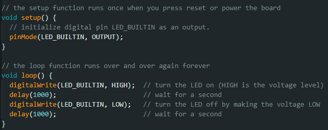
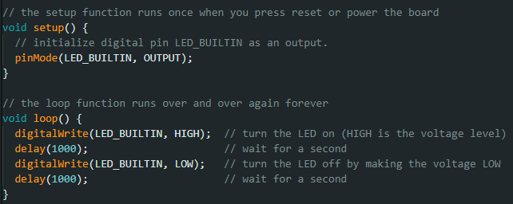
Week 4
Progress
In the fourth week, our team continued its efforts to address the challenge of visualizing recorded pathway locations on a map, even in the absence of a GPS tracker. A significant discovery was made through a website guide detailing a GPS tracker utilizing an SD card for storing GPS locations. These recorded coordinates could then be mapped using a Python script, particularly leveraging the Cartopy library.Contributions
Presently, our team is constrained to utilizing solely the ESP32 NodeMCU and a Python script guide (sourced from makersportal), constituting the current available resources for our project development. Given these limitations, I took the initiative to populate a CSV file with randomly generated latitude and longitude coordinates around Ngee Ann Polytechnic. This was aimed at testing the capability of the Python script, derived from the makersportal guide, to effectively plot geolocations on a map.For the execution of the pathway map plotting, I employed Jupyter Notebook to compile and run the Python script. Initial attempts were unsuccessful due to the absence of the Cartopy library, a Python library specializing in geospatial data processing and visualization, built on the Matplotlib library, and offering support for map projections. To address this, I utilized the Anaconda prompt to install the Cartopy library through the command "pip install cartopy." 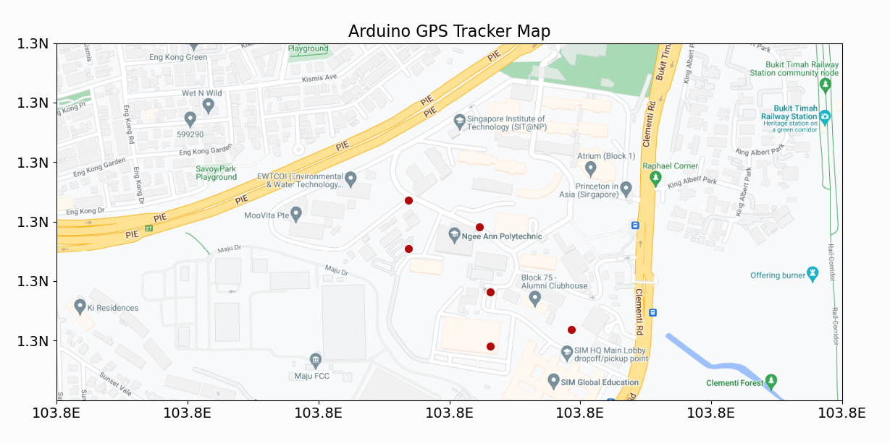
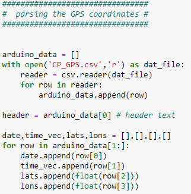 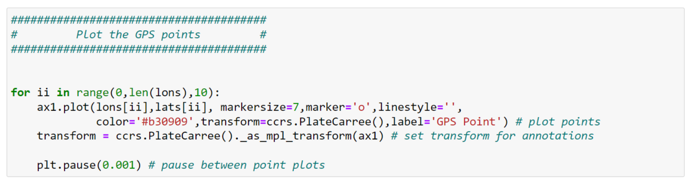
Week 5
Day 1
Contributions
During the first day of the hackathon, the highly anticipated GPS Tracker finally arrived. Eager to commence the integration process, I assisted with the connection with the ESP32 NodeMCU to implement the C++ code and initialize the entire GPS Tracker system. Regrettably, the initial execution of the code sketch revealed a significant setback as the GPS Tracker failed to operate as anticipated. The root cause of this malfunction stemmed from an oversight in referencing the incorrect version of the ESP32 NodeMCU pin layout. Consequently, an erroneous pin configuration was established for the GPS Tracker, creating a misalignment between the expected and actual pin connections. This mismatch impeded the ESP32 NodeMCU's ability to establish a successful connection and communicate with the GPS Tracker, resulting in a non-functional system.Day 2
On the second day of the hackathon, our team shifted focus to creating a map using generated GPS coordinates of latitude and longitude, as time constraints hindered progress with the Raspberry Pi setup. For visualizing the pathway traced by the collected GPS data, we employed a Python script that takes advantage of the functionalities offered by the Matplotlib and Cartopy libraries. This combination of tools facilitates the development of an informative and visually appealing map, effectively communicating the movement patterns captured by the GPS data. This visualization aids in assessing potential areas for improvement or identifying blind spots and unpatrolled sections in the security guard's route. Matplotlib serves as the fundamental framework for map generation, offering a versatile platform to construct and customize various plot elements. Its extensive array of functions and capabilities allows precise control over the map's appearance, including the selection of projection, scale, and styling of geographical features. On the other hand, Cartopy specializes in handling geospatial data and seamlessly integrates with Matplotlib to enhance the map's geographical accuracy and context. Its advanced features enable the inclusion of coastline data, country borders, and other pertinent geographical information, transforming the map into a comprehensive representation of the real world.Day 3
On the third day of the hackathon, our team is excited to present our GPS prototype, a revolutionary solution poised to transform security guard patrol monitoring within the security industry. Our innovative approach effectively tackles the challenge of recording security guard patrol paths, ensuring thorough coverage and minimizing potential security breaches. Highlighting the Challenge: In the security industry, a persistent challenge revolves around ensuring that security guards diligently adhere to their designated patrol routes to effectively safeguard properties and personnel. Our prototype directly confronts this challenge by offering a real-time, comprehensive solution for monitoring security guard patrols. Our system meticulously captures and records every movement of the security guard, providing a detailed log of their patrol path. This tracking capability facilitates immediate identification of any deviations from the established patrol route, enabling prompt intervention. Innovation and Key Concepts: Our prototype goes beyond traditional security solutions by incorporating groundbreaking features and adopting an innovative approach. At the heart of our system is advanced GPS tracking technology that continuously monitors the security guard's movements, delivering precise information about their patrol route. This real-time tracking capability extends beyond simple location monitoring, capturing details such as the guard's pace, direction, pauses, or deviations, creating a comprehensive overview of their patrol activities. Complementing the GPS tracking system is a robust data analytics platform that translates raw patrol data into actionable insights. Our platform analyzes patrol patterns, pinpointing areas of frequent coverage, potential security gaps, and any deviations from established routes. These insights empower security managers to optimize patrol routes, ensuring comprehensive attention to every area.Presentation slides : Problem Statements, Elevator Pitch and Potential issues
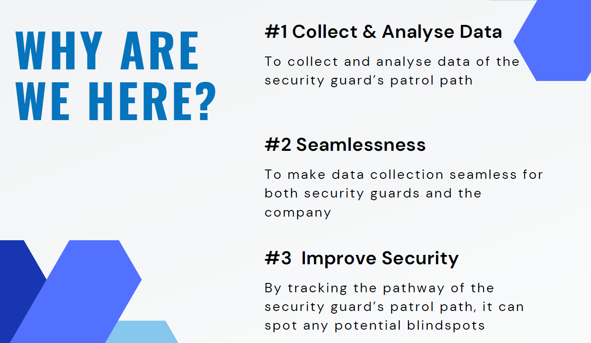 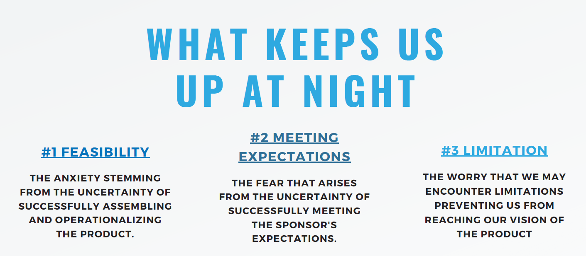Technical Solutions Map
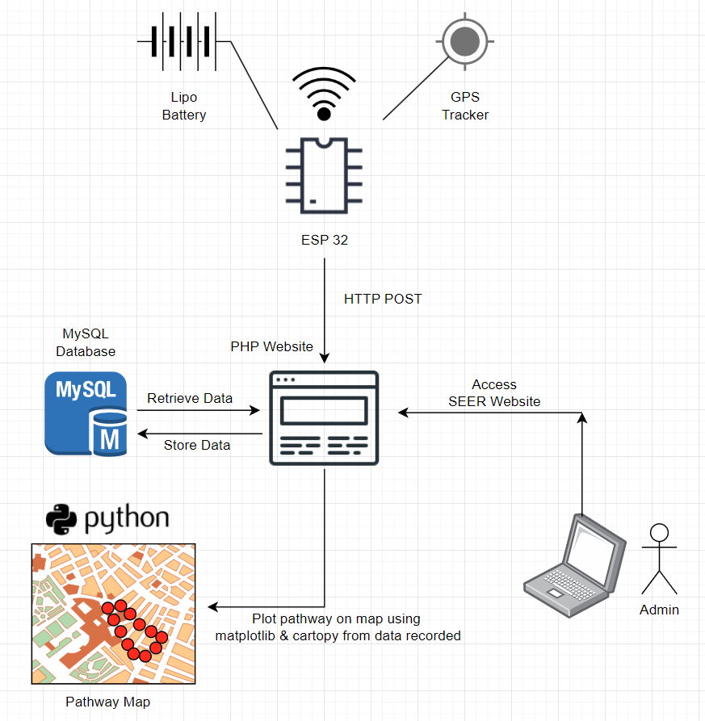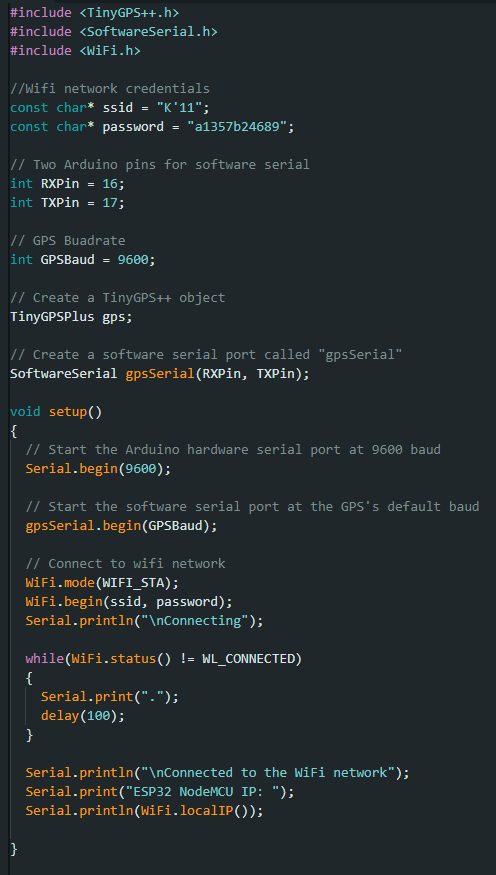 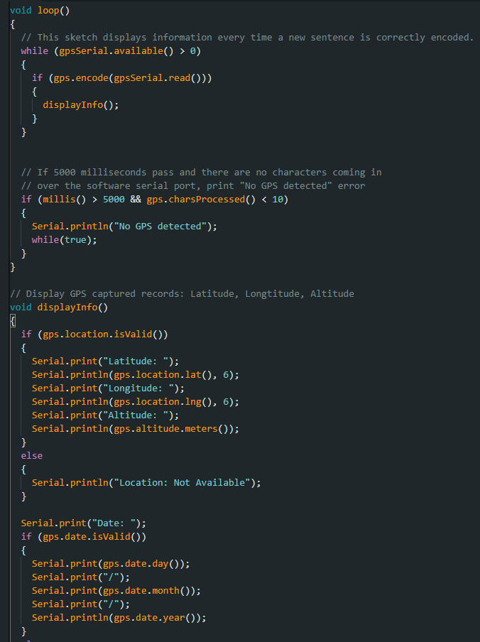 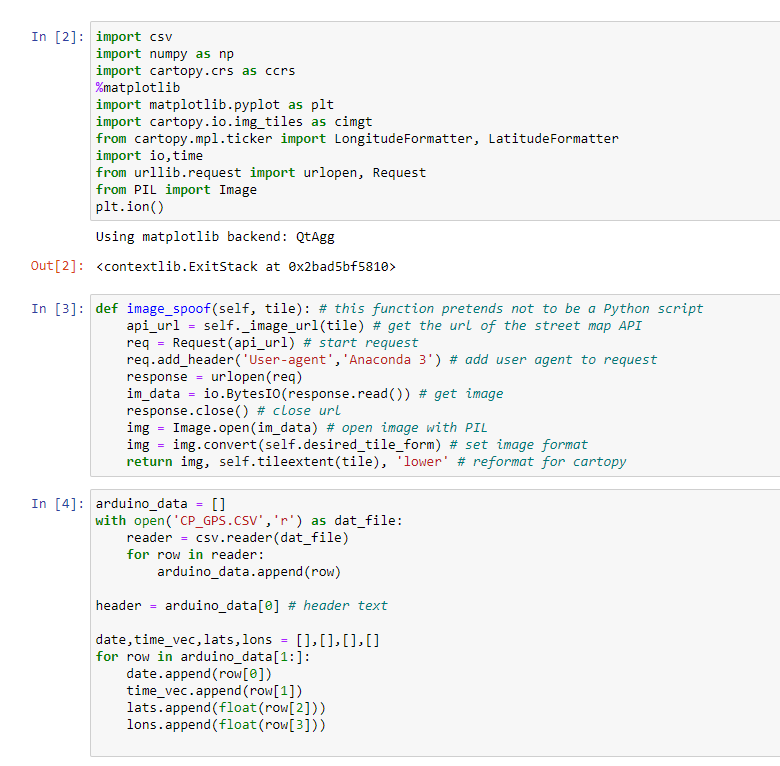 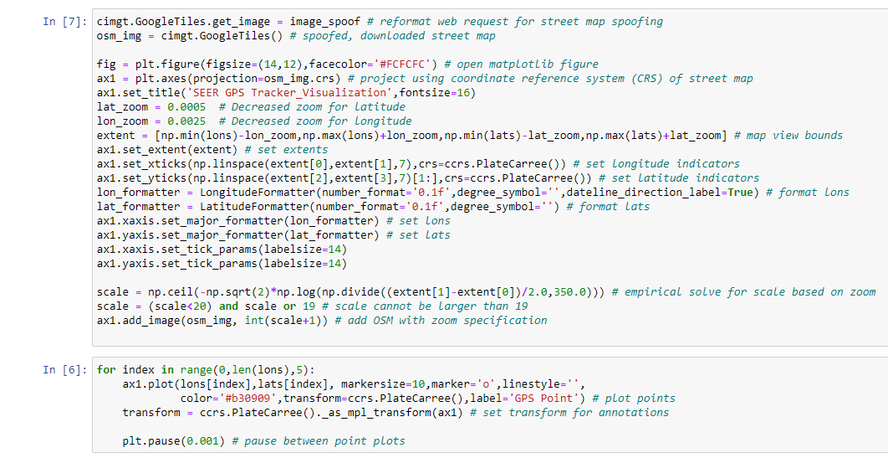 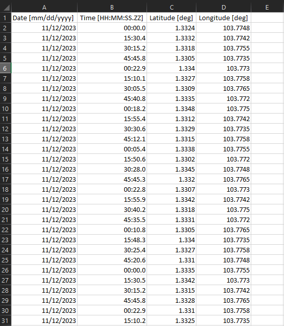 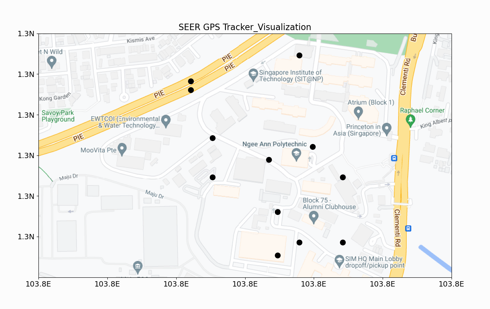
Week 12
Progress
In week 12, I have integrated a new feature to adapt a new value altitude into my cartopy Matplotlib visualization.This addition allows me to monitor the security guard's location more precisely, distinguishing between ground floor and elevated floor positions. By incorporating the altitude information, my visualization becomes more informative, enabling better tracking and understanding of the security guard's movements. This enhancement is particularly valuable in scenarios where distinguishing between different floors or elevations is crucial for security purposes. Users or observers of the visualization can now easily identify whether the security guard is located on the ground floor or on a higher level. This integration enhances the overall functionality of my visualization, providing a more comprehensive view of the security guard's position in three-dimensional space. It adds an extra layer of detail and context to the tracking system, contributing to improved situational awareness and security management.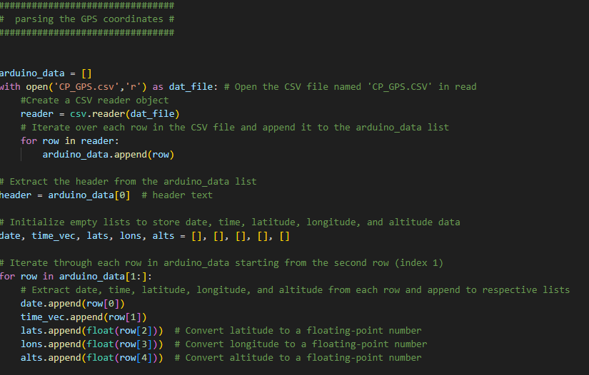 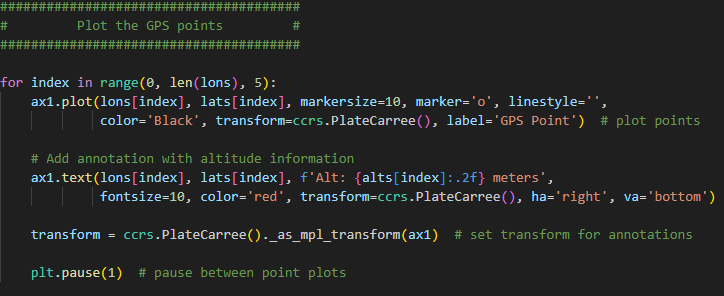
Week 13
Progress
In week 13, my primary focus was the implementation of a login feature for our web application using PHP, integrated with our MySQL database. This login functionality serves to authenticate administrators, providing secure access to sensitive sections of the website. As part of this process, I not only meticulously coded PHP for interacting with the database and validating admin credentials but also dedicated efforts to enhance the visual aspect of the login page. Specifically, I worked on designing the login page to improve its aesthetics and user interface. This endeavor aimed to not only fortify the security of our application but also elevate the overall user experience by ensuring that the login process is not only secure and efficient but also visually appealing. Once the admin credentials are successfully verified, administrators can seamlessly access the web application, marking a significant stride in both security and user satisfactionCheck Login function
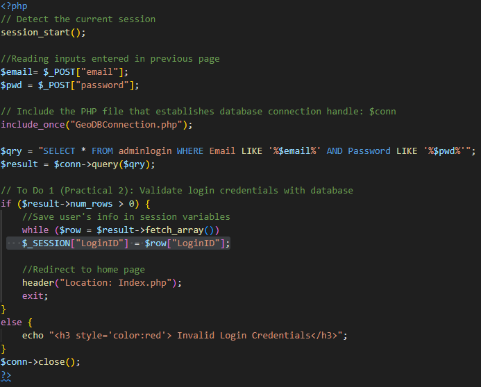Change Password function
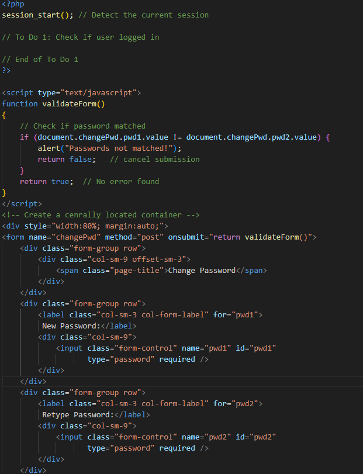 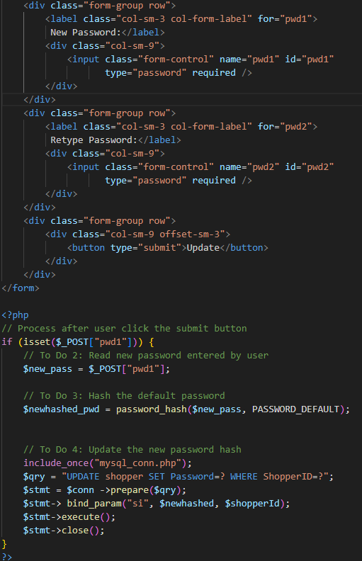Week 14
Progress
In week 14, I dedicated my time to refining my Python code that utilizes Matplotlib. Specifically, I focused on integrating it with a MySQL database. This integration allowed me to efficiently retrieve data from the database, which I then utilized to plot data points onto a GPS map within the Cartopy library of Matplotlib. By linking my Python code with the MySQL database, I was able to streamline the process of accessing and utilizing the data stored within it. This not only enhanced the efficiency of my code but also facilitated the visualization of the data points on the GPS map. Utilizing Matplotlib's capabilities alongside Cartopy's mapping functionalities, I was able to create a visually informative representation of the data, which is essential for gaining insights and making informed decisions based on geographical data.Python code [Linked to mysql Database]
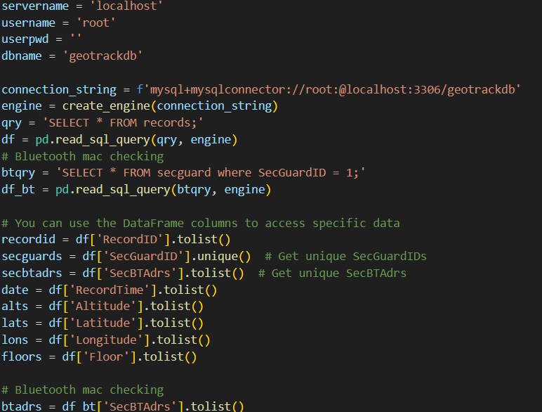Week 15
Progress
In week 15, I dedicated my efforts to refining my Matplotlib code further, focusing on enhancing its ability to generate informative and visually appealing plots. One significant update I implemented was the incorporation of a feature that assigns different colors to data plots based on the floor of the building from which the GPS data was collected. Additionally, I added a legend to the plot to display which color represents each floor. This enhancement significantly improves the interpretability of the generated plots. By assigning distinct colors to data points from different floors and providing a legend for reference, viewers can easily identify and understand the spatial distribution of data across various floors of the building. 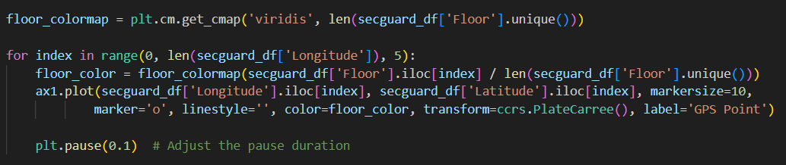 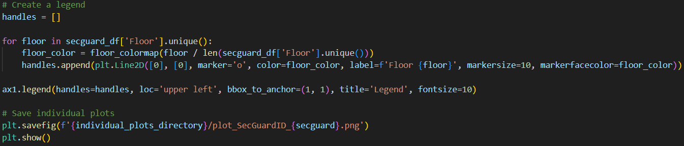Cartopy GPS Map
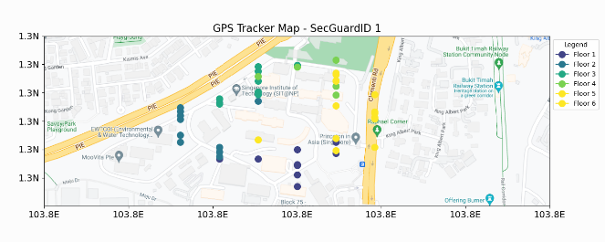Week 16
Progress
In week 16, my group mate Jia Xian and I conducted user testing for our GPS tracker project around Ngee Ann Polytechnic. This phase of user testing is pivotal in our development process as it allows us to gather invaluable feedback and pinpoint any potential issues or areas for improvement in our tracker's functionality and usability. During our testing sessions, we encountered a challenge related to the accuracy of altitude readings from the BMP sensor module, which we use to estimate floor levels. We realized that external factors, such as weather conditions, can affect the accuracy of these altitude readings. Consequently, this variability impacted the precision of our estimated floor levels. To address this issue, my group mate made temporary adjustments by setting a reference point to test the capability of the barometric pressure sensor to detect altitude changes, particularly when traversing stairs. This temporary measure aimed to assess whether the sensor could accurately detect altitude fluctuations associated with changes in elevation, such as climbing or descending stairs within buildings.I also expanded the functionality of my Matplotlib code to include a security check feature. Specifically, I incorporated logic to compare the Bluetooth MAC address of the security device with the assigned security guard device's Bluetooth MAC address stored in the database. If the MAC addresses do not match, indicating that the patrol was not conducted by the assigned security guard, I configured the code to plot the GPS points in red. This visual indication serves as a clear indicator that the patrol was not carried out by the designated personnel. By incorporating this security check into the Matplotlib code, I not only enhance the visualization of patrol data but also provide an effective means of monitoring and ensuring compliance with security protocols. This added layer of accountability can significantly contribute to maintaining the integrity and effectiveness of security patrols.